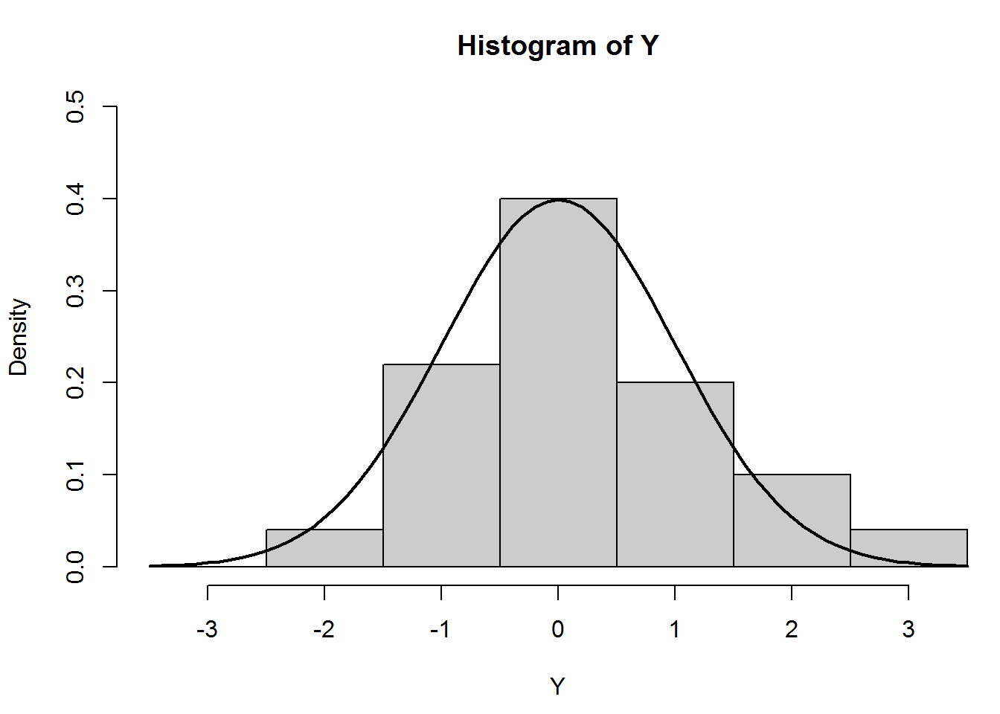

En esta pestaña, exhibo algunas densidades creadas en R y Rstudio con el objetivo de mostrar lo potente, útil y eficiente que son estos programas como lenguaje de programación orientados al cálculo estadístico y a la generación de gráficas.
plot(pressure)
text(150, 600,
"Pressure (mm Hg)\nversus\nTemperature (Celsius)")
# Histogram
# Random data
Y <- rnorm(50)
# Make sure no Y exceed [-3.5, 3.5]
Y[Y < -3.5 | Y > 3.5] <- NA
x <- seq(-3.5, 3.5, .1)
dn <- dnorm(x)
par(mar=c(4.5, 4.1, 3.1, 0))
hist(Y, breaks=seq(-3.5, 3.5), ylim=c(0, 0.5),
col="grey80", freq=FALSE)
lines(x, dnorm(x), lwd=2)
par(mar=c(5.1, 4.1, 4.1, 2.1))
# Piechart
# Example 4 from help(pie)
par(mar=c(0, 2, 1, 2), xpd=FALSE, cex=0.5)
pie.sales <- c(0.12, 0.3, 0.26, 0.16, 0.04, 0.12)
names(pie.sales) <- c("Blueberry", "Cherry",
"Apple", "Boston Cream", "Other", "Vanilla")
pie(pie.sales, col = gray(seq(0.4,1.0,length=6)))
Chapman & Hall / CRC, agosto de 2005.